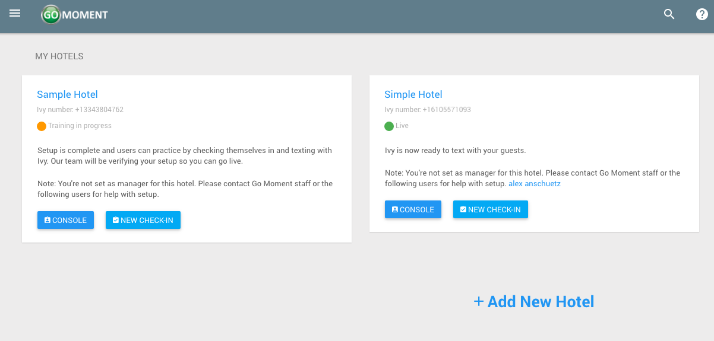
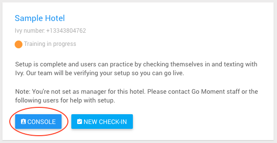
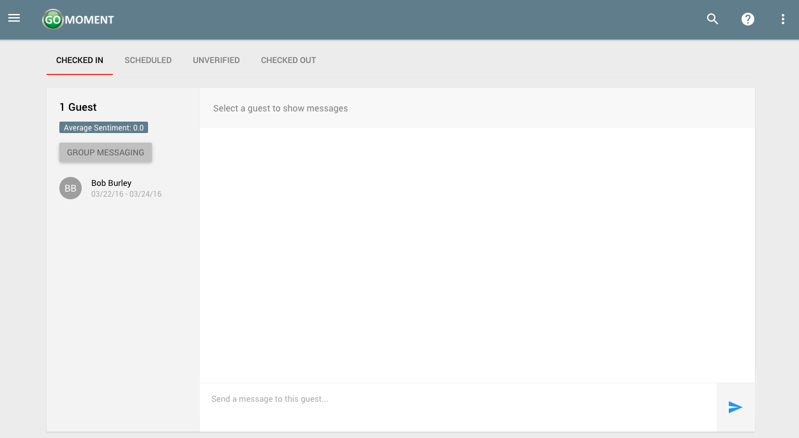
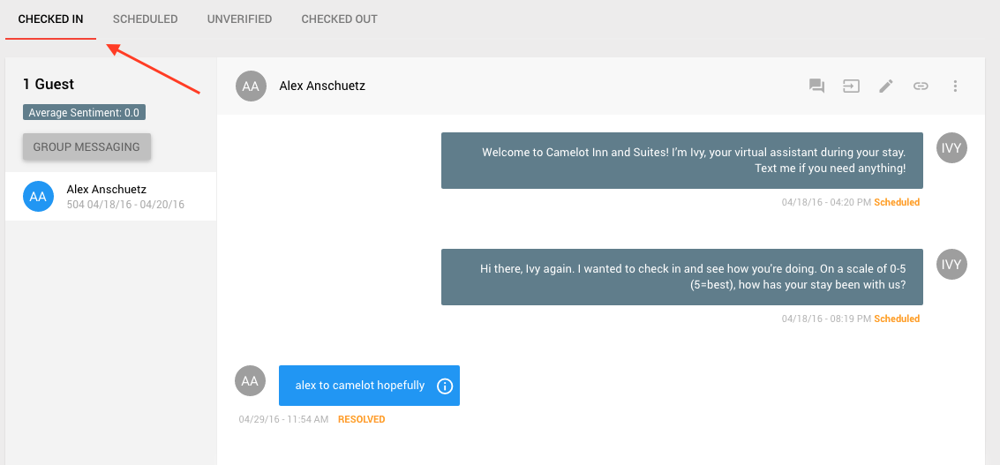
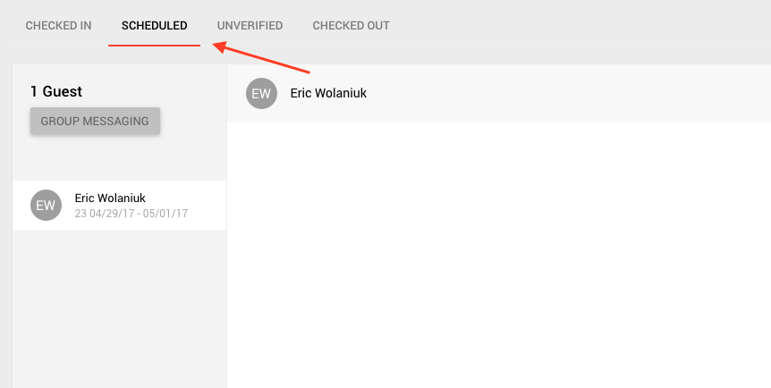
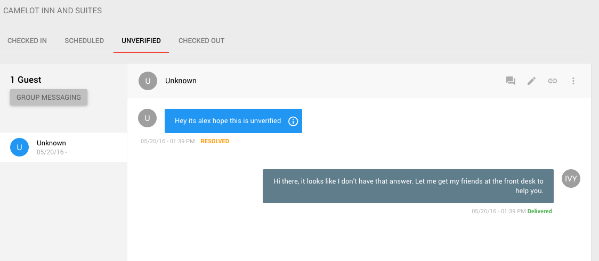
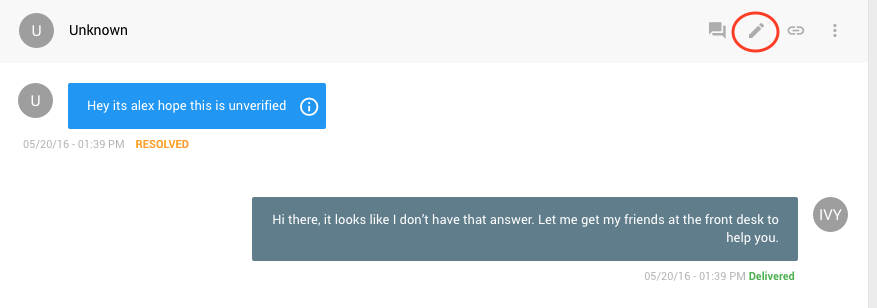
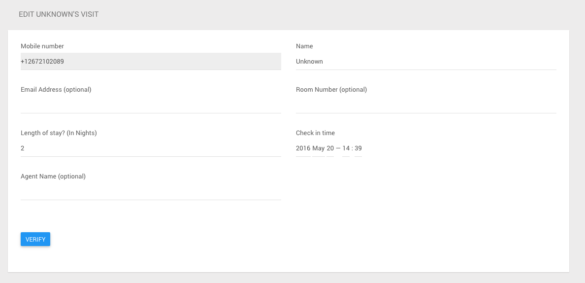
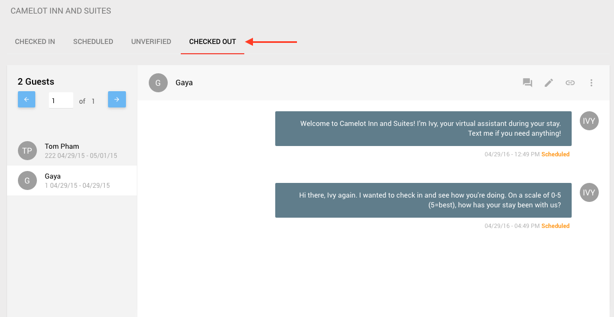

Getting To The Console
1) Log in as a non admin and see all the hotels your account is associated with.

2) Click the blue 'CONSOLE' button next to the hotel for which you wish to access the Staff Console.

3) You should see a console like this:

Within the console you can see four tabs at the top: CHECKED IN, SCHEDULED, UNVERIFIED, and CHECKED OUT
Checked in visits are guests who are currently checked in and have a check out date in the future. If you click the checked in tab, you can see all the guests who currently have checked in visits at the hotel.

Scheduled gvisits are guests who are have a visit at the hotel with a check in date in the future. If you click the scheduled tab, you can see all the guests who currently have scheduled in visits at the hotel.

Unverified visits are guests who have texted in to the hotel but may or may not have legitimate visit information. If you click the unverified tab, you can see all the guests who currently have unverified visits at the hotel.

If the guest is legitimate and you would like to check them in, click the pencil icon to verify the visit.

On this page enter all the corresponding information for the guest's visit. Click 'VERIFY' to check the guest in and save this information to their visit.

Checked out visits are guests who are currently checked out of the hotel. Meaning their check out date is today's date or in the past. If you click the checked out tab, you can see all the guests who currently have checked out visits at the hotel.
